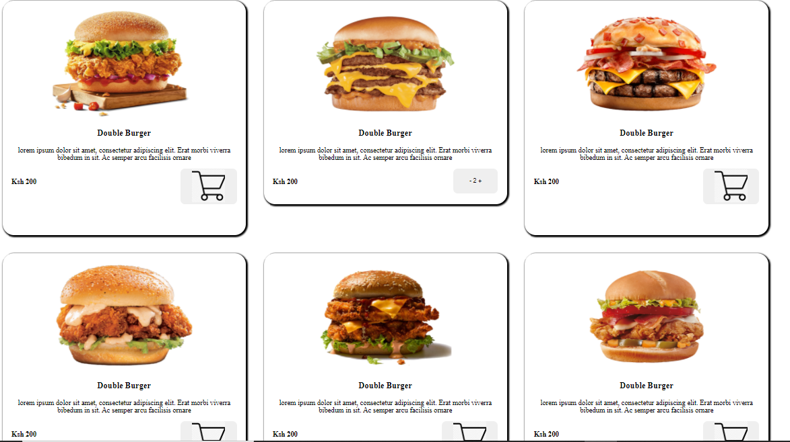

This was my second week project.
It was a bit challenging they way i look at it at first.
But with the passion i have i think i manage some how
And the languages used to achieve the design was:
Am kelvin kiplangat born and raised in a small town called sotik in bomet county,
sotik sub county. schooled in some of the local schools,
primary then high school. finished high school in 2014. joined masai technical tti in 2016
Did Dip in Information Communication Technology and finished in 2019.
In 2018 i worked at Flamingo Horticulture as IT technican. From nov 2020 i workded at the same company,
Flamingo Horticulture Fairtrade Association as Administrator, i left when i got an opportunity in Moringa
Since high school have always wanted to be a developer, did not manage to be when in college
since what we studied there was shallow. I already knew about moringa school did my research wanted to study
in one of the best bootcamp in kenya but the school fees was alot and my mum was not able to raise the fee. but until a
golded opportunity arrived when my friend who was a student sent me a link, i applied and i was lucky to be choosen,
i have passion in software Development, so being here is a dream come true.